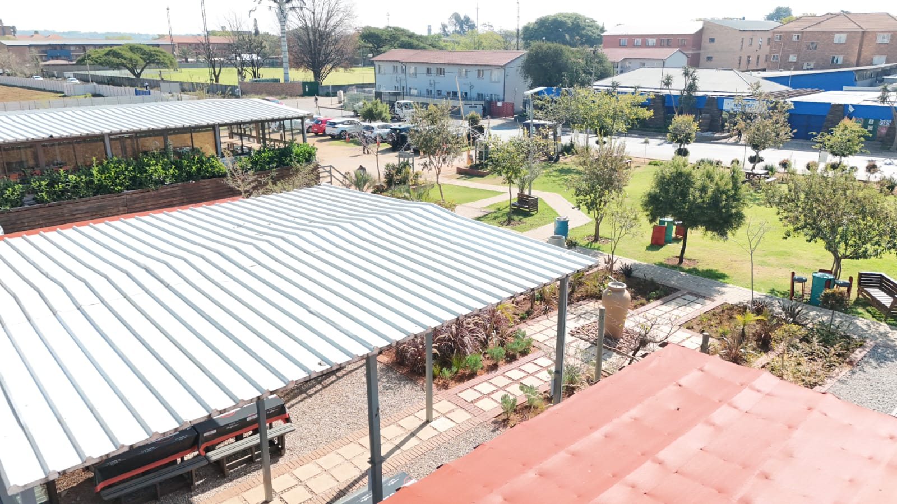
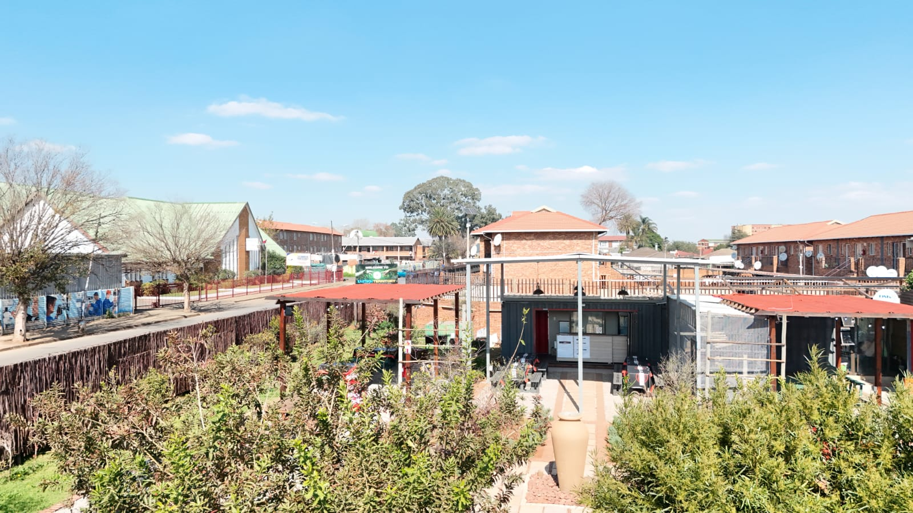
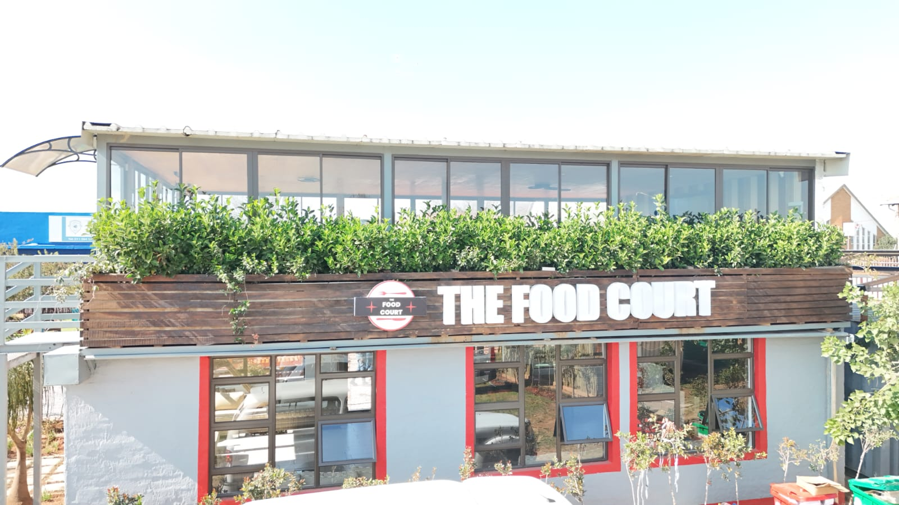
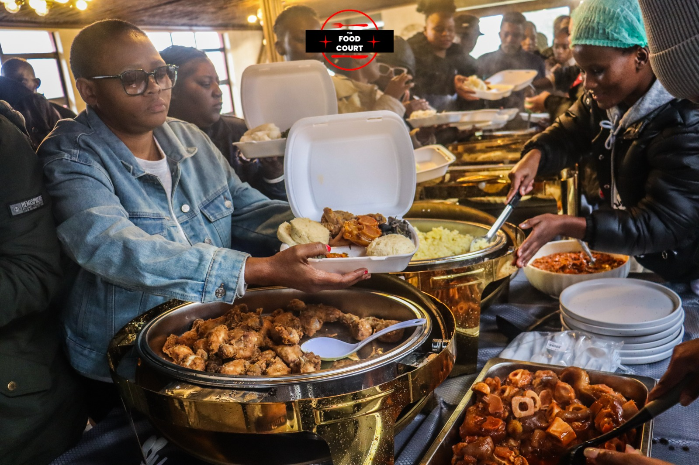
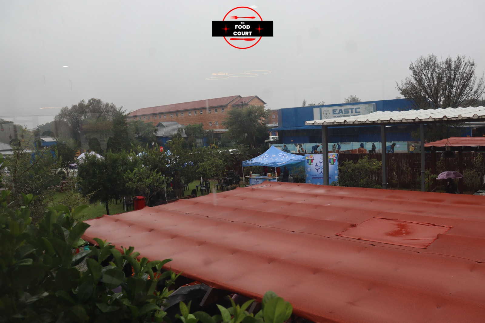
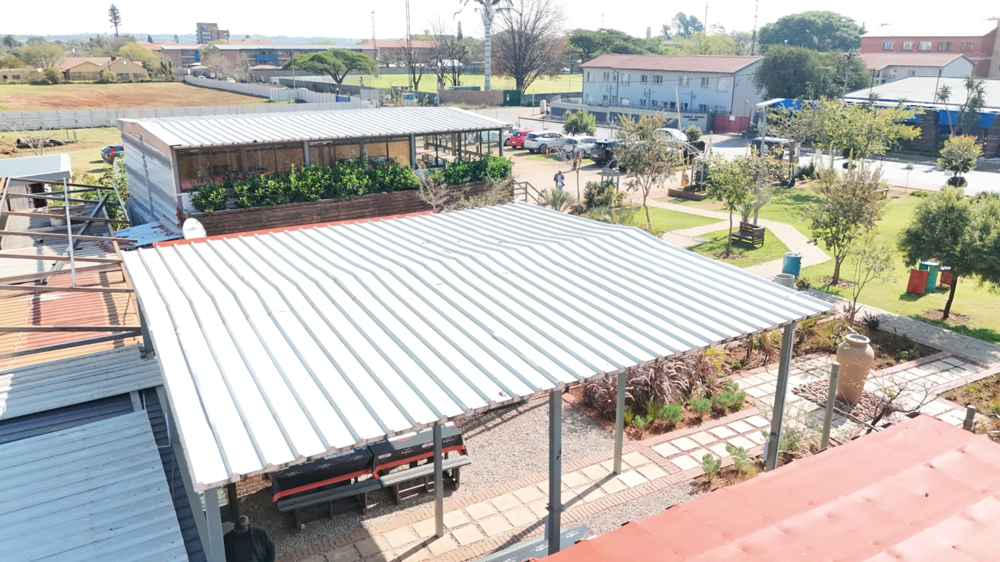
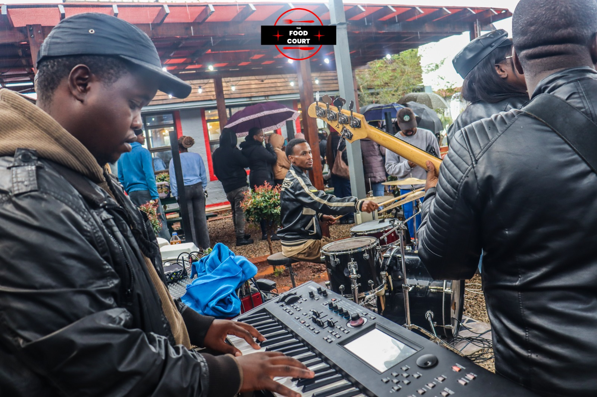

EASTC Technocentric Varsity
Campus, Kempton Park
43 Maxwell Street · DHET registered private training college 2019/FE07/D33 · Photographs from the varsity grounds.
Where the ecosystem lives
EASTC Foundation programmes run on the EASTC Technocentric Varsity campus — the same workshops, halls, gardens and student spaces that have trained artisans since 2006. These images are from the campus, not stock photography.
Visit us at 43 Maxwell Street, Kempton Park. Tel 011 394 1488 or 082 605 1134. queries@eastc.co.za












